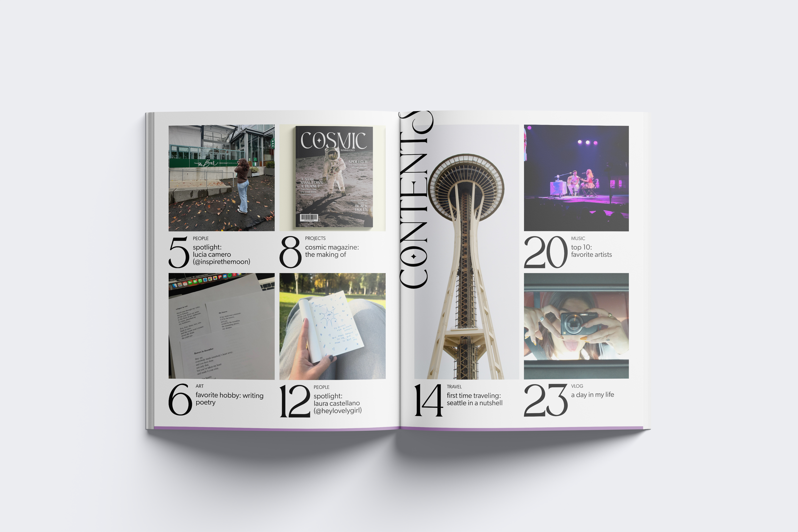
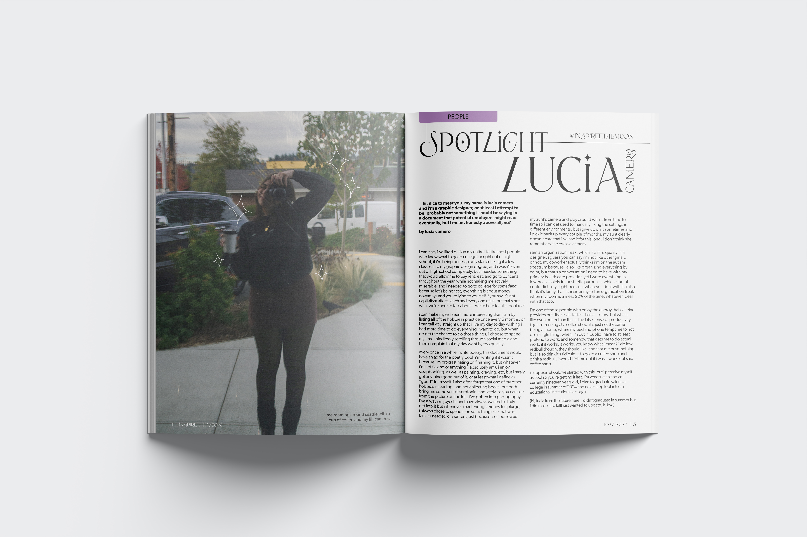
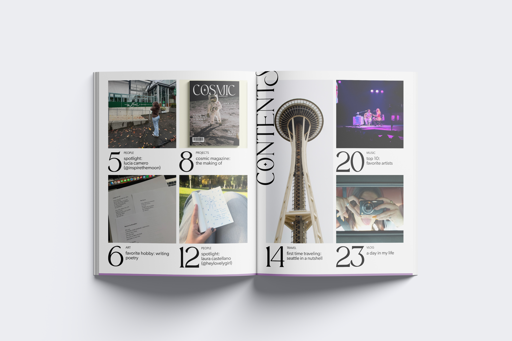
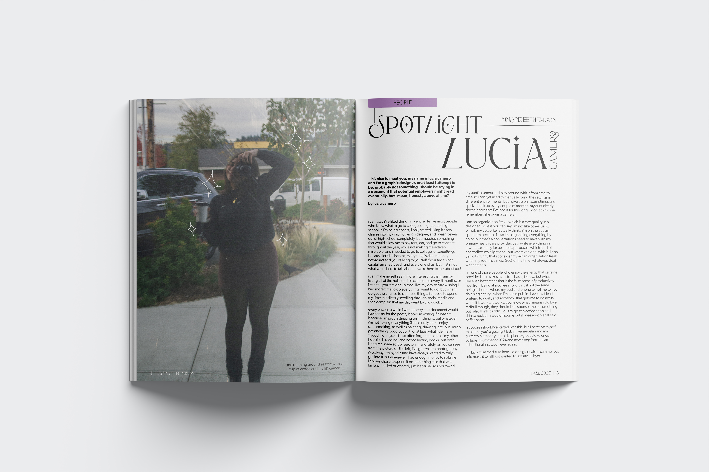
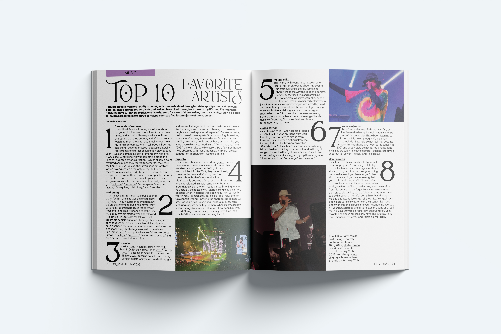
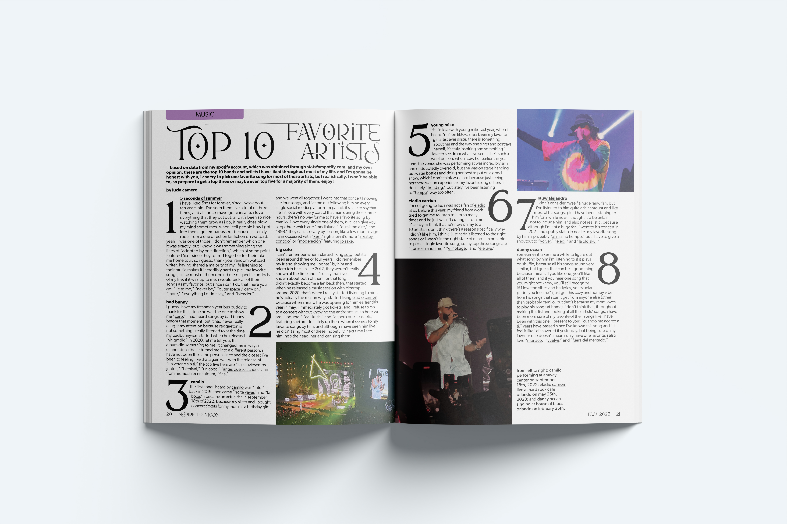
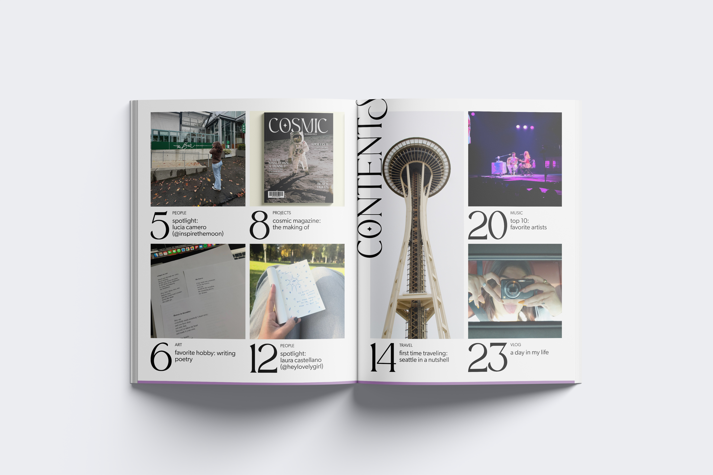
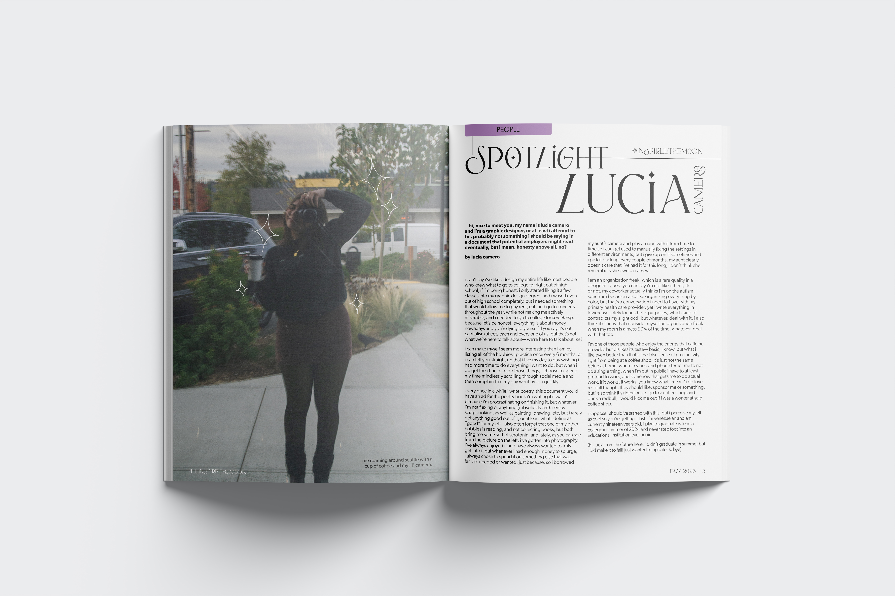
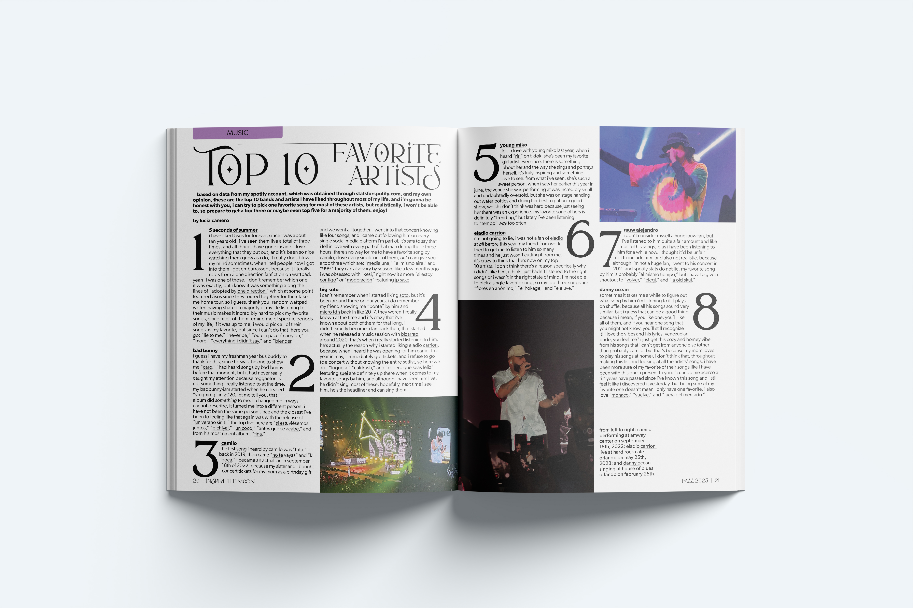

gallery
 
 
get to know the creator of inspire the moon through an interactive magazine! meet lucia (me!) in a much deeper level than you would probably like to. you will find super duper cool information about me such as my favorite hobby and my favorite artists, you even get to watch me get a tattoo on the 'day in my life' video! enjoy getting to know the coolest and bestest person you've ever seen in your life. ;)
creative director
indesign, photoshop
2023
magazine design, layout, advertising
inspire the moon © 2024